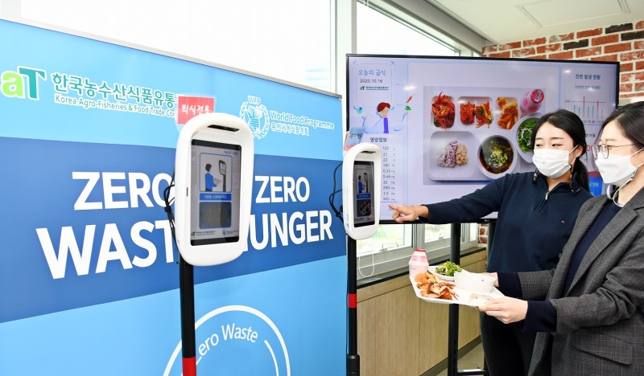

유엔식량농업기구(FAO)가 제정한 10월 16일 세계식량의 날을 맞아 한국농수산식품유통공사(aT, 사장 김춘진)는 올해 노벨평화상을 수상한 유엔세계식량계획(이하 WFP)이 펼치고 있는 Zero Waste, Zero Hunger(이하 ZWZH) 캠페인에 참여한다.
aT는 지난 9월 24일 WFP와의 협약을 계기로 이번 캠페인을 진행하게 되었으며, 정확한 식수예측으로 음식물 쓰레기를 획기적으로 줄이기 위한 AI시스템을 처음 도입했다.
해당 시스템은 AWS(아마존웹서비스)사와 부산클라우드혁신센터 powered by AWS의 지원을 받아 WFP, 동서대학교, 누비랩, 원데이터기술, 부산정보산업진흥원이 함께 개발하였으며, 이번 시범운영을 통해 식품업계 및 공공부문으로 확장할 계획이다.
이에 따라 aT 구내식당에서는 단체급식 식사 전후 직원들의 식판을 3D 사물인식용 스캐너로 스캔하면 잔반의 양과 종류를 측정하고, 그 결과를 데이터로 공유하게 된다.
한편, WFP에 따르면 매년 전 세계에서 생산되는 음식물의 양은 40억 톤으로, 이중 인구 20억 명을 먹일 수 있는 양인 13억 톤이 쓰레기로 버려지고 있다.
따라서 ZWZH 캠페인은 개인 음식물을 남기지 않고, 식당 음식물 쓰레기를 줄여 절감한 비용으로 기아에 고통받고 있는 사람들을 돕는 한편, 환경보호와 기후위기에 대응하는 선순환형 모델을 구축하기 위한 것이다.